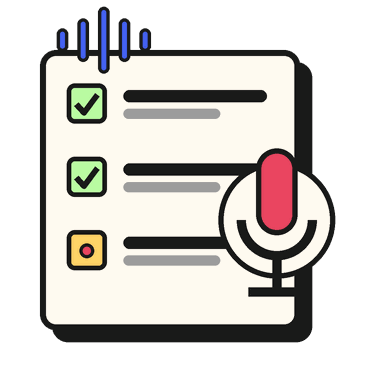

Ljodbanken
Spel inn ein heil liste med lydklipp på rad. Kvart klipp har sin eigen knapp, si eiga rettleiing og si eiga nedteljing — og kan skjerast til når det blei for langt. Til slutt lastar du ned alt som éi zip-fil. Lyden ligg berre i din eigen nettlesar, og blir aldri sendt nokon stad.
Lydliste
Opptaka ligg berre i minnet til fana. Lukkar du henne, er dei borte — last ned zip-fila før du går, og hent henne inn att når du skal halde fram.